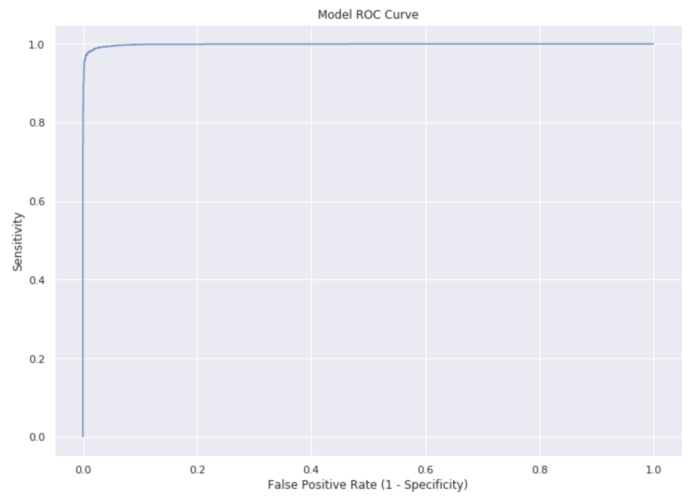

In this project for DATA 100 at UC Berkeley, I created a logistic regression classifier that can distinguish spam (junk or commercial or bulk) emails from ham (non-spam) emails. The project was originally done in Python through a Jupyter Notebook. Scikit-learn was utilized for machine learning, Natural Language Toolkit (NLTK) for analyzing text data, and Seaborn/Matplotlib for visualizations.
This project involved exploratory data analysis to better understand the data, followed by feature selection and engineering for the model. The main features used in my model were distinctive words from results of NLTK analysis.
I used various visuals, ranging from the common (bar graph, density plots), to the unqiue (heat maps, ROC curve) to convey my findings and display model efficacy. The ROC curve is shown below, and the ROC area-under-curve (AUC) score is 0.9987. This means that 99.87% of the time, the model is more likely to classify a spam email as ham than a ham email as spam. In this context, favoring false positives over false negatives is desired.
My final model had a training accuracy of 98.7%, 5-fold cross validation accuracy of 97.8%, and a test accuracy of 97.4%. I thought these results were quite good, especially given that the project was limited to logistic regression.
As the project is still in use for Data 100, the code and Jupyter Notebook cannot be shared publicly. However, I have transcibed essential information and all of the relevant visuals to LaTeX form, which can be seen here.
Skills & tools: Logistic regression, Python, Natural Language Toolkit (NLTK)